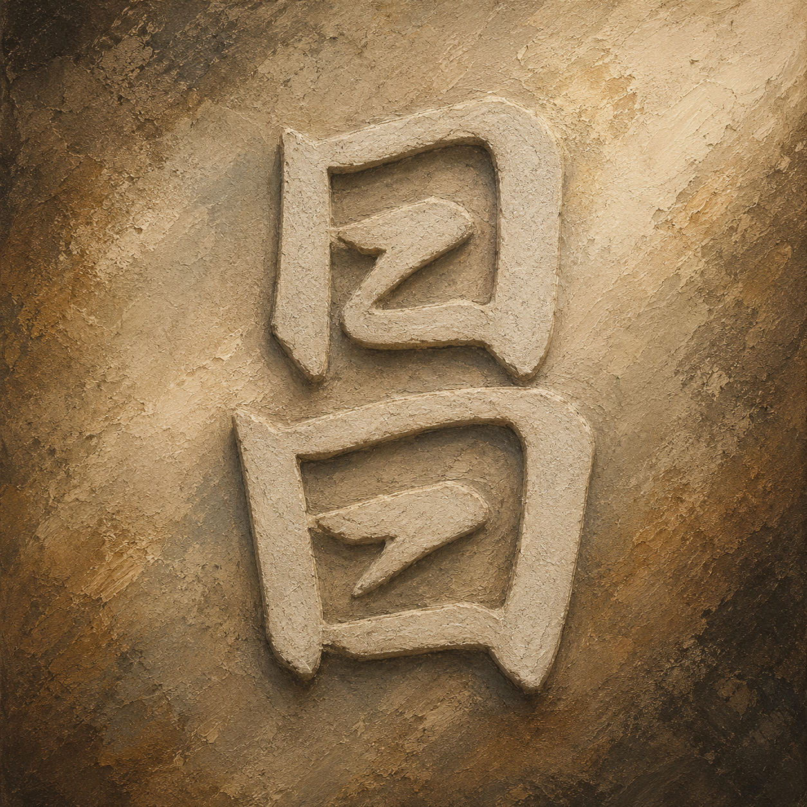
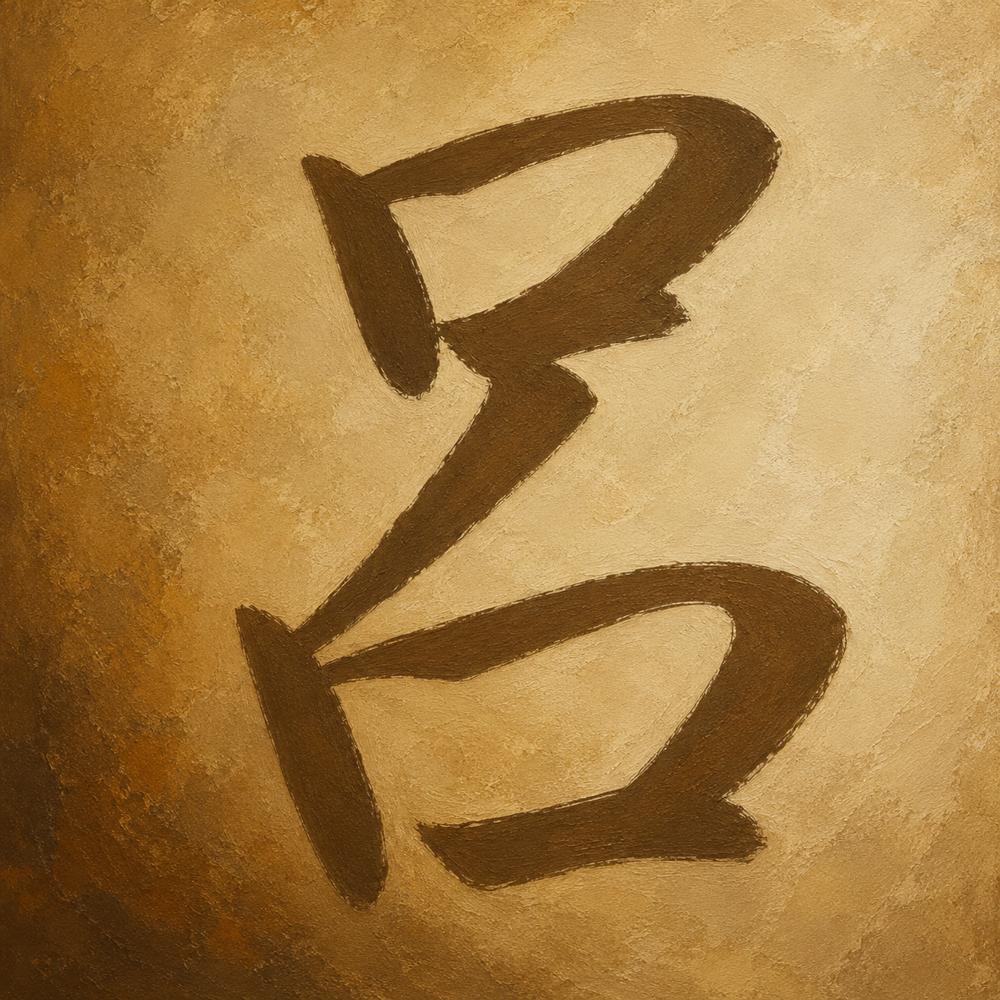
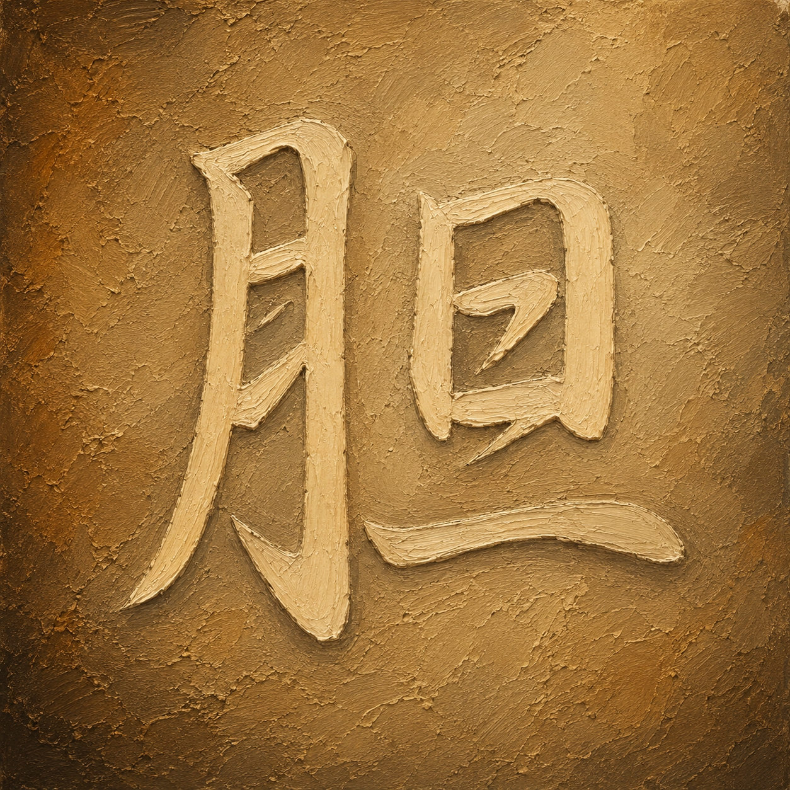
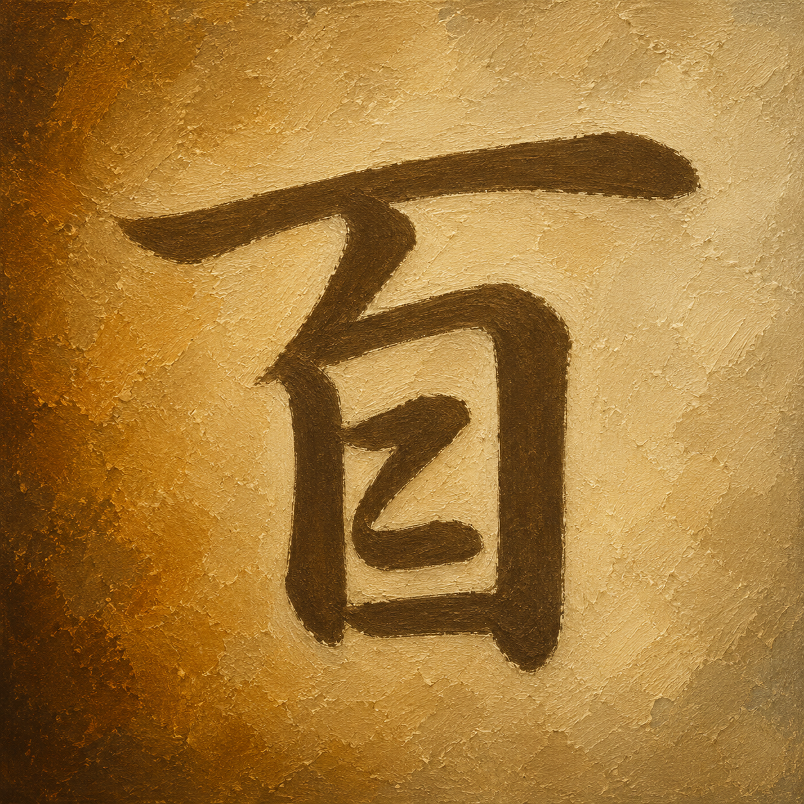
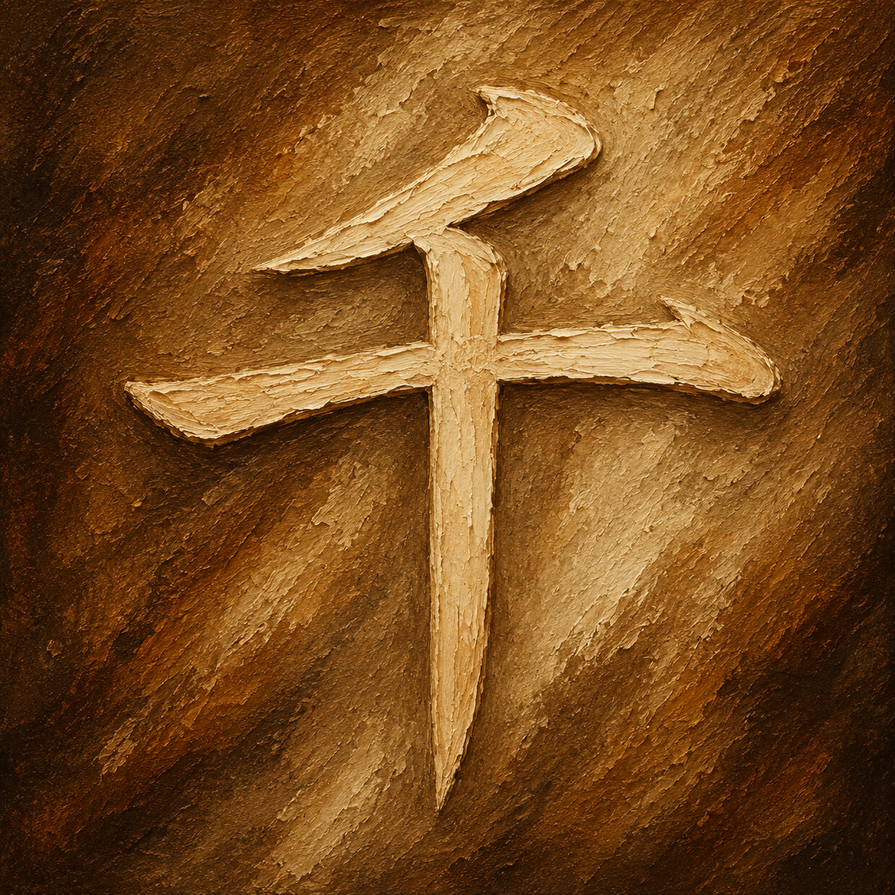

💡 Tip: Click the featured kanji to view stroke order animations

湖面に 二つの日が静かに並び
霧の谷だけが 光を留めていた
Two suns rested quietly upon the lake,
while only the misty valley held their light.

夕暮れの鐘楼に 釣り鐘が吊る
静かな光だけが 声を包んでいた
In the belfry at dusk the temple bell hung still,
while only the quiet light wrapped around its voice.

三つの水晶が 机の上に置かれ
棱の光だけが 森へ溢れていた
Three crystals rested upon the wooden table,
while only their faceted light spilled toward the forest.

三つの碗が 重ねて置かれ
障子の光だけが 金を温めていた
Three bowls were stacked upon the table,
while only the shoji light warmed their metal.

二つの碗が 空中に並び
縦の隙間だけが 姿を支えていた
Two bowls aligned in midair one above the other,
while only the vertical gap between them held their form.

朝の平原に 一本の柱が立ち
水の十字だけが 一日を告げていた
Upon the morning plain a single post stood tall,
while only the cross of water heralded the day.

山の端から 朝日が顔を出し
池の柱だけが 影を留めていた
From behind the mountain's edge the sun appeared,
while only the post in the pond kept its shadow.

幾世代も 同じ湖を照らし
黄金の霧だけが 岸を包んでいた
For countless generations the same lake was lit,
while only the golden mist wrapped the shoreline.

静かな部屋に 碗から光が溢れ
夕の山だけが 窓の外に続いた
In the quiet room light overflowed from the bowl,
while only the evening mountains continued beyond the window.

水平線から 朝日が顔を出し
空の余白だけが 光を迎えていた
From the horizon the morning sun showed its face,
while only the open sky welcomed the light.

碗の上に 一滴が静止し
黄金の光だけが 部屋を満たしていた
Above the bowl a single drop hung motionless,
while only its golden light filled the room.

夕の谷底に 川が大きく曲がり
光の帯だけが 山を越えて続いた
Through the evening valley the river curved wide,
while only the band of light continued across the mountains.

三日月の碗が 机の上で光り
窓の夕景だけが 窪みを映していた
The crescent bowl glowed upon the wooden table,
while only the sunset through the window mirrored its hollow.
舟形の碗が 机の上で膨らみ
内側の光だけが 影を押し上げた
The boat-shaped bowl swelled upon the table,
while only the light within pushed the shadow upward.

古い窓辺に 夕日が差し込み
削れた壁だけが 年月を留めていた
Sunset light streamed through the aged window,
while only the worn walls kept the passing years.

窓辺の台に 光る球が置かれ
一人の静けさだけが 部屋に在った
Upon the ledge by the window a glowing sphere rested,
and only a solitary stillness remained in the room.

白い花束が 窓辺に置かれ
夕焼けだけが 花びらを染めていた
A bouquet of white flowers rested by the window,
while only the sunset stained the petals.

折り紙の鶴が 木の盆に溢れ
夕光だけが 百の翼を照らした
Origami cranes overflowed the wooden tray,
while only the evening light lit a hundred wings.

光る球の 中央を光が貫き
縦の筋だけが 静けさを留めていた
Light passed through the center of the glowing sphere,
while only a vertical line held the stillness.

廊下の天井に 千の鶴が吊る
尽きぬ光だけが 奥へ続いていた
From the corridor ceiling a thousand cranes hung down,
while only the endless light continued toward the back.